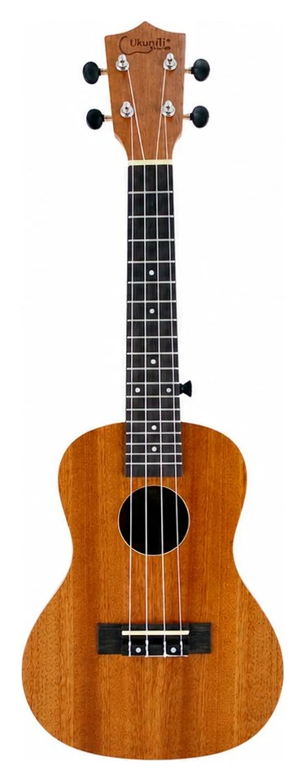

Ukulele Malaysia
Made for the Malaysian Player Dibuat untuk pemain Malaysia 为马来西亚琴友而做Find the right ukulele size, learn the basics, compare beginner models, and personalize your instrument with engraving or printing. Cari saiz ukulele yang sesuai, belajar asas, bandingkan model pemula, dan jadikan ukulele anda lebih peribadi dengan ukiran atau cetakan. 选择合适尺寸、学习入门知识、比较初学型号，也可以为你的乐器加上刻字或印刷名字。
Choose Your First Ukulele Pilih Ukulele Pertama Anda 选择你的第一把 Ukulele
Different sizes, different feels. Start with the one that matches your hands, voice and playing style. Saiz berbeza memberi rasa berbeza. Mula dengan yang sesuai dengan tangan, suara dan gaya bermain anda. 不同尺寸，有不同手感和音色。先找到适合你的手型、声音和弹奏方式的尺寸。
21” Soprano Soprano Soprano
Small, bright and easy to start. Kecil, cerah dan mudah untuk mula. 小巧、声音明亮，最容易入门。
Learn More → Ketahui Lagi → 了解更多 →
23” Concert Concert Concert
Best balance for most beginners. Pilihan paling seimbang untuk kebanyakan pemula. 大多数初学者最平衡的选择。
Learn More → Ketahui Lagi → 了解更多 →26” Tenor Tenor Tenor
Fuller sound, more space to grow. Bunyi lebih penuh, ruang jari lebih selesa. 声音更饱满，指板空间更舒服。
Learn More → Ketahui Lagi → 了解更多 →Malaysia Ukulele Guide Panduan Ukulele Malaysia 马来西亚 Ukulele 指南
Everything you need to know, from buying to playing. Semua yang perlu anda tahu, dari membeli hingga bermain. 从购买到学习，一次看懂。
How to Choose Ukulele Cara Pilih Ukulele 如何选择 Ukulele
Simple guide to help you find the right ukulele. Panduan ringkas untuk mencari ukulele yang sesuai. 简单看懂，找到适合你的 Ukulele。
Read More → Baca Lagi → 继续阅读 →Ukulele Size Guide Panduan Saiz Ukulele Ukulele 尺寸指南
Understand soprano, concert, tenor and baritone. Fahami soprano, concert, tenor dan baritone. 看懂高音、中音、次中音和低音款。
Read More → Baca Lagi → 继续阅读 →Beginner Buying Guide Panduan Beli untuk Pemula 初学者购买指南
Tips for first-time buyers in Malaysia. Tip untuk pembeli kali pertama di Malaysia. 给马来西亚第一次购买者的建议。
Read More → Baca Lagi → 继续阅读 →Ukulele Tuning Guide Panduan Tuning Ukulele Ukulele 调音指南
Keep your ukulele in perfect tune. Pastikan ukulele anda sentiasa tepat bunyinya. 让你的 Ukulele 保持准确音准。
Read More → Baca Lagi → 继续阅读 →Engraving & Printing Guide Panduan Ukiran & Cetakan 刻字与印刷指南
Make it yours with name engraving and printing. Jadikan ukulele lebih peribadi dengan ukiran dan cetakan nama. 用刻字或印刷名字，让乐器更有个人感。
Read More → Baca Lagi → 继续阅读 →Personalize Your Ukulele Personalisasi Ukulele Anda 定制你的 Ukulele
Name engraving, logo printing, school gifts and special moments. Ukiran nama, cetakan logo, hadiah sekolah dan momen istimewa. 名字刻字、Logo 印刷、学校礼品和特别纪念都可以安排。
Explore Personalization → Lihat Personalisasi → 查看定制服务 →Guitar & Name Printing Gitar & Cetakan Nama 吉他与名字印刷
Looking for guitar products too? Choose a guitar, preview your name design, or print a name on your capo. Mencari produk gitar juga? Pilih gitar, lihat pratonton nama, atau cetak nama pada capo anda. 也在找吉他产品？你可以选购吉他、预览吉他名字设计，也可以为 Capo 印上名字。
Need a guitar first? Perlukan gitar dahulu? 还没有吉他？
Browse Ukunili guitar models, then add name printing for a more personal gift or beginner set. Lihat model gitar Ukunili, kemudian tambah cetakan nama untuk hadiah atau set pemula yang lebih peribadi. 先选购 Ukunili 吉他，再搭配名字印刷，更适合作为礼物或初学套装。
Guitar Printing Name Cetak Nama Pada Gitar 吉他名字印刷
Type your name, choose a font, select guitar color, then send the preview to us by WhatsApp. Taip nama, pilih font dan warna gitar, kemudian hantar pratonton kepada kami melalui WhatsApp. 输入名字、选择字体和吉他颜色，然后把预览图发给我们。
Open Preview → Buka Pratonton → 打开预览 → Capo printing Cetakan capo Capo 印刷Capo Printing Name Cetak Nama Pada Capo Capo 名字印刷
Create a clean name preview for your capo and send the design to our team. Cipta pratonton nama untuk capo anda dan hantar reka bentuk kepada pasukan kami. 为你的 Capo 制作名字预览，并把设计发给我们确认。
Design Capo → Reka Capo → 设计 Capo →Where to Buy Capo Di Mana Beli Capo 哪里购买 Capo
Shop capo first, then come back to add name printing if you want a personalized piece. Beli capo dahulu, kemudian tambah cetakan nama jika mahu lebih peribadi. 先购买 Capo，需要定制时再回来加名字印刷。
Buy Guitar Online Beli Gitar Online 线上购买吉他
View current guitar models and offers available from Ukunili. Lihat model gitar dan tawaran semasa daripada Ukunili. 查看 Ukunili 目前的吉他型号和优惠。
Ready to start playing? Sedia untuk mula bermain? 准备开始弹奏了吗？
Start with a beginner-friendly ukulele and use our guides whenever you need help. Mula dengan ukulele mesra pemula dan gunakan panduan kami bila-bila anda perlukan bantuan. 从一把适合初学者的 Ukulele 开始，需要帮助时就回来查看我们的指南。
Shop Ukunili Ukuleles Beli Ukulele Ukunili 选购 Ukunili Ukulele